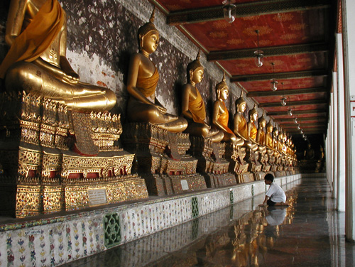

Thailand Trav-E-Logs©
| Bangkok 1
sent 23 April 2003 |
 |
| back: First Days | Young boy is taught respect |
Sunday
Breakfast at a restaurant across the street: asked for fruit and yogurt, got a few pieces of fresh fruit and a yogurt cup -- identical to that available at any convenience store -- 60 baht ($1.50). It's mid-morning by the time I head towards several temples on the other side of the Grand Palace. Got to the corner of a giant intersection, and decided to deviate to the left to cross. This meant crossing several streets to get to my destination, but felt it was safer. Finally arrived at "the other side", and a young Thai gentleman comes up to me and asks where I'm going. Sounds like a tout, but tell him to the temples (Wat). He says they were open only this morning, but closed because of special ceremony. Still sounds like a tout, but he does NOT offer to drive me anywhere. Says he has the day off and is waiting for his wife, who works at the building across the way. I mention going to another temple and he points out the way. This agrees with my map, so thank him and change destination for the Wat Suthat Thetwararam, even though it is a much longer walk on this hot day.
At first, many military and police uniforms and equipment are noted in the shop windows lining the street, but as the temple is approached, the merchandise changes to Buddha figures, statues, robes, and even flowers. A very tall structure immediately in front of the Wat looks like a gate or "Torii" to those familiar with Japan, but it is actually a giant swing. Inside the complex, a gentleman wants to explain the workings of the temple to me. He is easy to understand, but I tell him I can’t afford to hire him as a guide. He says he has nothing better to do, so follows and we strike up a conversation. Several times he says he used to be a monk, but now he’s a monkey. I feel slightly offended, but try not to show it. The connotation of the statement to me means addicted to hard drugs. Alcohol appears to be his vise. For the first temple of this trip, it's not bad, as the first three photos on this page show. After the tour, we’re both hot, and he asks if I could buy him a drink. Great idea, I can afford that. We walk down to a multistoried supermarket; He has a cold beer, I a soda, then leave him with enough baht for one more. We’re both happy.
Monday
Breakfast: half a pineapple from a street vendor, dipped piece by piece into a yogurt cup from a convenience store. 20 baht ($0.50). Wash up back at the New 99 Guest House, then out the door, again headed towards several temples on the other side of the Grand Palace. Got to the same corner of a giant intersection, where another traveler was trying unsuccessfully to cross eight lanes without the aid of traffic signals. After we succeeded crossing at a slightly safer location, I asked if perhaps we were headed to the same temples. She had seen one of the two closer temples, but was going to the Grand Palace today. "Admission is 200 baht," shocked her. But everyone says it is the most important place to see in Bangkok, so my plans change again and I join Gabriella. (That's close to $5, and half of a typical backpacker's daily budget.) I was not disappointed. Even the weather was great -- a few white puffy clouds in the sky to enhance the photographs. The Grand Palace complex houses the royal residence as well as the temple of the Emerald Buddha. The entire complex was built in stages from 1782 to 1903, and is kept in immaculate condition. The Emerald Buddha is about two feet tall, actually made of green jade, and is dwarfed by the huge, golden Thai-traditional style throne on which it rests. Pictures will not do the palace and temple complex justice. One additional side note about the Emerald Buddha -- it has three sets of "clothing", one for each of the three seasons; wet, cool, and hot. As we finished touring the grounds, we looked for a place to grab a bite to eat. A small eatery across the street seemed to be the only logical place, but every table was occupied. The proprietor asked a gentleman sitting alone at a small table if we could join him, and he cheerfully agreed. We thanked him, not knowing if he could understand us. After ordering from the menu, the gentleman asked, in a rather reserved fashion, where we were from. "Swiss - USA, and you?" "Bangkok." A delightful conversation followed where we learned he is retired from the University associated with the Grand Palace. He taught Sanskrit to the King's daughter. Visits his daughter often in Southern California. Another entry in a backpacker's Trav-E-Log. Gabriella and I head back to Khao San. She has worked three years for Swiss Air, and is worried about the world economy, especially now with Bush's war and SARS. She lists the destinations Swiss Air has cancelled, and wonders if she will have a job upon return from vacation. She points out a place advertising free Internet, -- “United Traveler’s Connection”, and I show her where I eat many of my meals. We say good bye, hoping we'll meet again -- if not on this journey, then the next. |
Tuesday
Breakfast: half a fresh pineapple, dipped piece by piece into a strawberry yogurt cup -- they were out of "plain". The yogurt seems no different -- neither sweet, nor sour -- 19.5 baht. I'm out early again, so think I'll try the free Internet service Gabriella pointed out yesterday. Climbing up to the forth floor, I notice much of the writing appears to be Hebrew script. This is where the Israelis congregate to find out which countries will not permit passage because of their passport. Part of me is thankful the cold war is at an end, and part feels sick there is still so much nationalistic hate in the world. At any rate, I use 25 minutes free access to check out the SARS situation on the WHO site, and catch a little of CNN. It's free, but it's slow. There are about 45 workstations in this room, and only one other backpacker here so early in the morning. I thank the hostess, and ask if it's possible to use my laptop. She doesn't understand, so I show her my intentions of just sitting at a powered-down workstation, and plug in to the 220-volt outlet. She seems to accept, so I try to organize and write for awhile. Then I notice she has started a timer, and worry I'll get a big bill, even though I'm not hooked onto their network. Returning at a more appropriate time seems prudent.
Down the street to a tourist office, and ask for bus directions to the Vimanmek Mansion. Bus #70, 3.5 baht, bus stop near that same giant intersection of yesterday.
So off I go to the bus stop for my first public bus ride in Bangkok. Sure enough, I get to the intersection and read a sign posted with an extensive list of busses that stop here. Happily, #70 is about a third of the way down the list. Watching the way passengers board the busses is a study in efficiency. Just before the bus stops, de-barking and embarking commence, with the average stopped time less than 5 seconds! It is really amazing, and I laugh when I think of the American system of "safety." Next I see an elderly lady wave at a bus, and see the driver take full precautions to ensure her safety aboard. Here comes the #70 bus, four lanes over with turn indicator on. I wonder if it's going to stop, and start hustling towards the other end of the long city block. The driver pulls over near the curb, four or five busses in front of me; in five seconds he's off, and he couldn't see me if he wanted to. I continue to where the bus stopped, and read a similar sign with the same extensive list. Took me ten minutes to miss this bus, wonder if all #70 busses stop in the same portion of the block. I decide to get a cool bottled drink from one of the many vendors working the bus stop. 15 minutes later, another #70 stops in front of me. 61 and still making a few good decisions. On the bus, I try to give the conductor 3.5 baht, but she takes closer to 13.5 baht. Oh -- the bus is air conditioned.
Following the bus route on a map in-situ is a good idea. Soon the driver nods for me to get off at a large white gate. Walking through the unguarded gate, I have no idea which way to proceed, so I ask a young visitor which way to the traditional Thai dance performance due to start in about 10 minutes. He says it's hard to explain, but points across lawn and parking lot in the general direction. I thank him profusely, and walk at a fast pace. Later, signs are posted which guide me to my destination. I take a seat on the steps of the mansion facing the covered stage area with about three minutes to spare. Signs are posted that say if you take pictures, you will be asked to pay a photo fee. I recognize the first, third, and forth dances from a video checked out on Thai (or was it Cambodian?) traditional dances from the Thousand Oaks Library. Unlike this live performance, the video gave English explanations of the dances -- wow, homework that paid off!
After the performance, I take a few pictures of students in graduation gowns. Seems this is a popular place, but I'm not sure if university graduation ceremonies are held here, or if families plan an outing here with graduates after ceremonies elsewhere. A walk around the garden reveals many trees labeled with Latin names. There, next to a cafeteria, is a small jackfruit tree with almost a dozen fruit of various sizes. Again I dream of Yogyakarta.
Now it's time to view Vimanmek Mansion, the world's largest golden teakwood building. Room after room of stuff filled with Royal portraits and souvenirs from Europe and Asia, collected several hundred years ago. The tour is guided, so I can't duck out early. Even had to pay 20 baht to store my shoes, pack, and waist sack, as they are not permitted in the mansion.
Now, how do I get home? Ask at the information booth, and they tell me to either get back on the 70 and ride it all the way back to where I got on, or take the 12, a more direct return. Go out the gate, left and left. I have to wait about one minute. 3.5 baht -- no air conditioning. I recognize Democracy square, and get off the bus. This time I check out the food section of the book store, and buy a few packaged food items for the Cambodian bus trip Friday. Two minute walk home.
Wednesday
Not much to report today – just spent several hours in a university, first in the air conditioned library, where I wrote for an hour until someone noticed my laptop was plugged in. No no! Okay, I unplug and browse the newspapers to see what’s happening with the SARS epidemic. Seems the Chinese have many more deaths and cases then ever reported. I definitely will not be going to Hanoi.
Spent time talking to students, and later in the park more students corner me. Walk along the river on the way home, and check with Linda’s visa service. IT’S FINISHED! Now I can leave for Cambodia, Vietnam, and Laos – two days earlier than expected.
Don’t know how connections will be for awhile. Don’t panic – I should be back in northern Thailand in eight weeks or so. E-mail is available, but I may not be able to use the laptop for quite some time.
------------------------------
Email me at the juno.com address "dancer2SEAsia"
"Travel is Fatal to Bigotry, Prejudice, and Narrow-minded ness" .... attributed to Mark Twain
| Jump to next Thailand: Chiang Khong, Chiang Rai | next: Siem Reap |
| back: First Days |